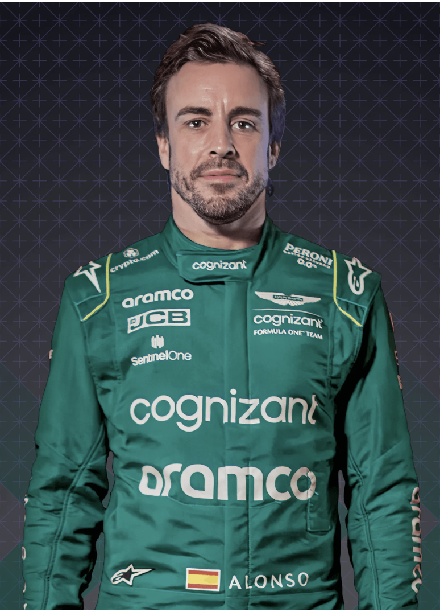
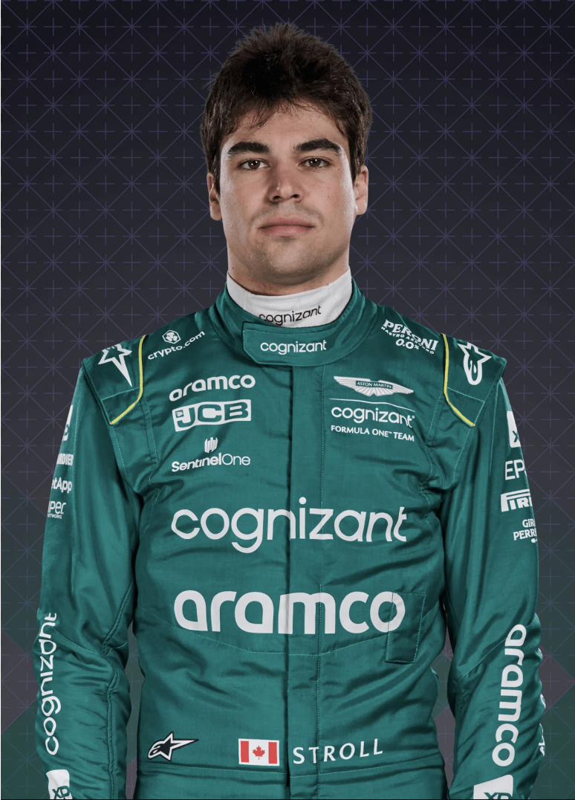

Aston Martin F1 Team
|

14 Fernando Alonso |

18 Lance Stroll |
|---|
Aston Martin’s original Formula 1 foray – over half a century ago – lasted just five races. This time, though, it’s serious. This F1 squad are no strangers to success, having won in their original guise of Jordan and most recently as Racing Point in 2020. Renowned for their ability to punch above their weight, and now with a two-time champion leading their driver line-up, Aston Martin are very much a team to watch…
Low-key season sees team retain seventh in the standings, with P6 their best race finish – for Sebastian Vettel in Azerbaijan and Japan, and Lance Stroll in Singapore. Vettel announces his F1 retirement, with fellow champion Fernando Alonso swiftly signed as his 2023 replacement.
Fail to keep pace with midfield rivals and drop to P7 in the standings, scoring less than half their 2020 points tally. Highlights are Sebastian Vettel’s podium in Azerbaijan plus fifth places at Spa and Monaco. Low point is his disqualification from P2 in Hungary for a fuel infringement.
With the team firmly back on their feet, the Racing Point name scores a first race win en route to fourth in the standings courtesy of Sergio Perez, who is replaced by Sebastian Vettel for 2021 and the squad’s transformation to Aston Martin.
The hangover from 2018’s turmoil takes its toll, and the team's recovery is a slow one, despite some gutsy drives from the ever-reliable Sergio Perez, who scores 52 of their 73 points, ensuring they retain seventh in the constructors' table.
As the tight intra-team rivalry between stalwart Sergio Perez and Mercedes protege Esteban Ocon continues, drop toward the rear of the midfield amid financial uncertainty, culminating in new ownership, the new Racing Point name – and a new championship entry – from August’s Belgian GP onwards. Recover well to finish seventh overall, despite losing 59 points accrued prior to Spa.